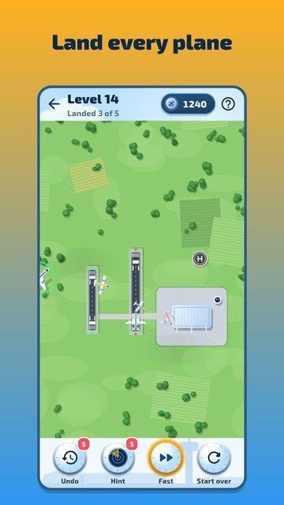

Air Dispatcher: Landing
You are the air dispatcher. Planes and helicopters circle over your airport, their fuel running low, and only you decide who lands first.
Tap an aircraft, then a runway, and it flies a real approach: it turns on a curve, lines up with the runway, puffs tyre smoke on touchdown and rolls out to the terminal. While a plane rolls out, its runway is busy: rush, and the next one has to go around. Wait too long, and the fuel runs out. Every shift is a small puzzle of order and timing.

- 300 levels at 12 airports: meadow, pine forest, lake, steppe, mountains, snow, island, capital, harbour, desert, polar and starport.
- Nine aircraft: light planes, turboprops, airliners, business jets, widebodies, cargo planes, helicopters, air ambulances and seaplanes.
- Something new every 10 levels: wind and landing into it, MAYDAY calls, departures, thunderstorms over the field, night shifts with runway lights, wind shifts, runway inspections.
- Real flight physics: turn radius, wind drift, the descent and the shadow that meets the plane on the ground.
- Made a mistake? Undo winds time back 10 seconds. Not sure who goes next? Ask for the dispatcher's tip.
- A shift of the day, the same for everyone, with a week's archive, daily tasks and seasonal events.
- A ×2 button for those who like it fast. Plays offline, in Russian and English.
Optional: one reminder if you are away for a week; turn it off in the settings. Take your shift: the sky is waiting!